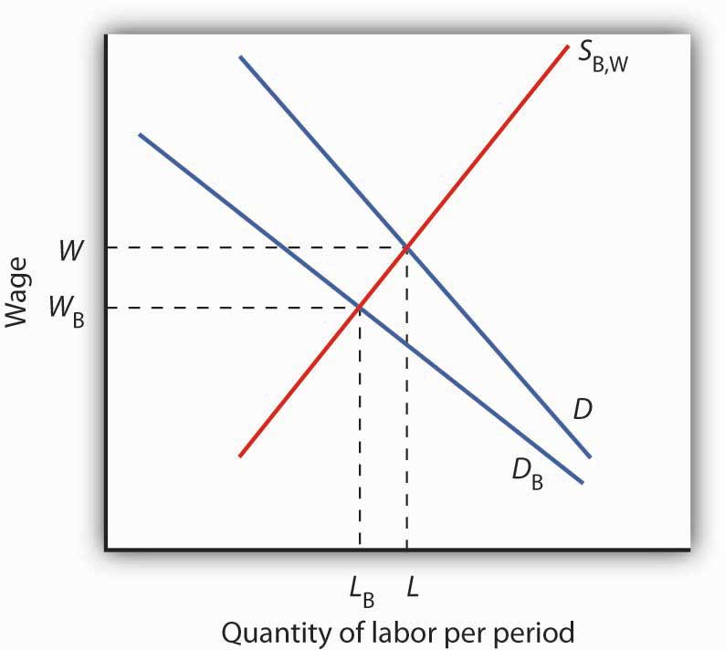
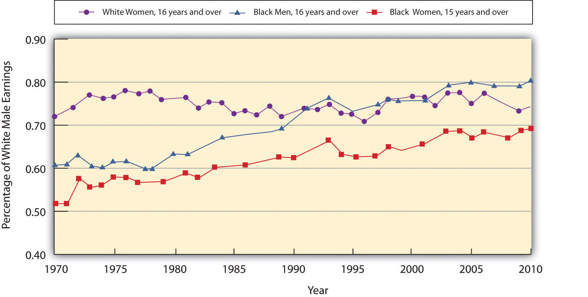

We have seen that being a female head of household or being a member of a racial minority increases the likelihood of being at the low end of the income distribution and of being poor. In the real world, we know that on average women and members of racial minorities receive different wages from white male workers, even though they may have similar qualifications and backgrounds. They might be charged different prices or denied employment opportunities. This section examines the economic forces that create such discrimination, as well as the measures that can be used to address it.
DiscriminationWhen people with similar economic characteristics experience different economic outcomes because of their race, sex, or other noneconomic characteristics. occurs when people with similar economic characteristics experience different economic outcomes because of their race, sex, or other noneconomic characteristics. A black worker whose skills and experience are identical to those of a white worker but who receives a lower wage is a victim of discrimination. A woman denied a job opportunity solely on the basis of her gender is the victim of discrimination. To the extent that discrimination exists, a country will not be allocating resources efficiently; the economy will be operating inside its production possibilities curve.
Pioneering work on the economics of discrimination was done by Gary S. Becker, an economist at the University of Chicago, who won the Nobel Prize in economics in 1992. He suggested that discrimination occurs because of people’s preferences or attitudes. If enough people have prejudices against certain racial groups, or against women, or against people with any particular characteristic, the market will respond to those preferences.
In Becker’s model, discriminatory preferences drive a wedge between the outcomes experienced by different groups. Discriminatory preferences can make salespeople less willing to sell to one group than to another or make consumers less willing to buy from the members of one group than from another or to make workers of one race or sex or ethnic group less willing to work with those of another race, sex, or ethnic group.
Let us explore Becker’s model by examining labor-market discrimination against black workers. We begin by assuming that no discriminatory preferences or attitudes exist. For simplicity, suppose that the supply curves of black and white workers are identical; they are shown as a single curve in Figure 19.7 "Prejudice and Discrimination". Suppose further that all workers have identical marginal products; they are equally productive. In the absence of racial preferences, the demand for workers of both races would be D. Black and white workers would each receive a wage W per unit of labor. A total of L black workers and L white workers would be employed.
Figure 19.7 Prejudice and Discrimination
If employers, customers, or employees have discriminatory preferences, and those preferences are widespread, then the marketplace will result in discrimination. Here, black workers receive a lower wage and fewer of them are employed than would be the case in the absence of discriminatory preferences.
Now suppose that employers have discriminatory attitudes that cause them to assume that a black worker is less productive than an otherwise similar white worker. Now employers have a lower demand, DB, for black than for white workers. Employers pay black workers a lower wage, WB, and employ fewer of them, LB instead of L, than they would in the absence of discrimination.
As illustrated in Figure 19.7 "Prejudice and Discrimination", racial prejudices on the part of employers produce discrimination against black workers, who receive lower wages and have fewer employment opportunities than white workers. Discrimination can result from prejudices among other groups in the economy as well.
One source of discriminatory prejudices is other workers. Suppose, for example, that white workers prefer not to work with black workers and require a wage premium for doing so. Such preferences would, in effect, raise the cost to the firm of hiring black workers. Firms would respond by demanding fewer of them, and wages for black workers would fall.
Another source of discrimination against black workers could come from customers. If the buyers of a firm’s product prefer not to deal with black employees, the firm might respond by demanding fewer of them. In effect, prejudice on the part of consumers would lower the revenue that firms can generate from the output of black workers.
Whether discriminatory preferences exist among employers, employees, or consumers, the impact on the group discriminated against will be the same. Fewer members of that group will be employed, and their wages will be lower than the wages of other workers whose skills and experience are otherwise similar.
Race and sex are not the only characteristics that affect hiring and wages. Some studies have found that people who are short, overweight, or physically unattractive also suffer from discrimination, and charges of discrimination have been voiced by disabled people and by homosexuals. Whenever discrimination occurs, it implies that employers, workers, or customers have discriminatory preferences. For the effects of such preferences to be felt in the marketplace, they must be widely shared.
There are, however, market pressures that can serve to lessen discrimination. For example, if some employers hold discriminatory preferences but others do not, it will be profit enhancing for those who do not to hire workers from the group being discriminated against. Because workers from this group are less expensive to hire, costs for non-discriminating firms will be lower. If the market is at least somewhat competitive, firms who continue to discriminate may be driven out of business.
Reacting to demands for social change brought on most notably by the civil rights and women’s movements, the federal government took action against discrimination. In 1954, the U.S. Supreme Court rendered its decision that so-called separate but equal schools for black and white children were inherently unequal, and the Court ordered that racially segregated schools be integrated. The Equal Pay Act of 1963 requires employers to pay the same wages to men and women who do substantially the same work. Federal legislation was passed in 1965 to ensure that minorities were not denied the right to vote.
Congress passed the most important federal legislation against discrimination in 1964. The Civil Rights Act barred discrimination on the basis of race, sex, or ethnicity in pay, promotion, hiring, firing, and training. An Executive Order issued by President Lyndon Johnson in 1967 required federal contractors to implement affirmative action programs to ensure that members of minority groups and women were given equal opportunities in employment. The practical effect of the order was to require that these employers increase the percentage of women and minorities in their work forces. Affirmative action programs for minorities followed at most colleges and universities.
What has been the outcome of these efforts to reduce discrimination? A starting point is to look at wage differences among different groups. Gaps in wages between males and females and between blacks and whites have fallen over time. In 1955, the wages of black men were about 60% of those of white men; in 2010, they were 74% of those of white men. For black men, the reduction in the wage gap occurred primarily between 1965 and 1973. In contrast, the gap between the wages of black women and white men closed more substantially, and progress in closing the gap continued after 1973, albeit at a slower rate. Specifically, the wages of black women were about 35% of those of white men in 1955, 58% in 1975, and 70% in 2010. For white women, the pattern of gain is still different. The wages of white women were about 65% of those of white men in 1955 and fell to about 60% from the mid-1960s to the late 1970s. The wages of white females relative to white males have improved, however, over the last 40 years. In 2010, white female wages were 80% of white male wages. While there has been improvement in wage gaps between black men, black women, and white women vis-à-vis white men, a substantial gap still remains. Figure 19.8 "The Wage Gap" shows the wage differences for the period 1969–2010.
Figure 19.8 The Wage Gap
The exhibit shows the wages of white women, black women, and black men as a percentage of the wages of white men from 1969–2010. As you can see, the gap has closed considerably, but there remains a substantial gap between the wages of white men and those of other groups in the economy. Part of the difference is a result of discrimination.
Source: Table 37. Median weekly earnings of full-time wage and salary workers, by selected characteristics. For recent years, http://www.bls.gov/cps/tables.
One question that economists try to answer is the extent to which the gaps are due to discrimination per se and the extent to which they reflect other factors, such as differences in education, job experience, or choices that individuals in particular groups make about labor-force participation. Once these factors are accounted for, the amount of the remaining wage differential due to discrimination is less than the raw differentials presented in Figure 19.8 "The Wage Gap" would seem to indicate.
There is evidence as well that the wage differential due to discrimination against women and blacks, as measured by empirical studies, has declined over time. For example, a number of studies have concluded that black men in the 1980s and 1990s experienced a 12 to 15% loss in earnings due to labor-market discrimination.William A. Darity and Patrick L. Mason, “Evidence on Discrimination in Employment,” Journal of Economic Perspectives 12:2 (Spring 1998): 63–90. University of Chicago economist James Heckman denies that the entire 12% to 15% differential is due to racial discrimination, pointing to problems inherent in measuring and comparing human capital among individuals. Nevertheless, he reports that the earnings loss due to discrimination similarly measured would have been between 30 and 40% in 1940 and still over 20% in 1970.James J. Heckman, “Detecting Discrimination,” Journal of Economic Perspectives 12:2 (Spring 1998): 101–16.
Can civil rights legislation take credit for the reductions in labor-market discrimination over time? To some extent, yes. A study by Heckman and John J. Donohue III, a law professor at Northwestern University, concluded that the landmark 1964 Civil Rights Act, as well as other civil rights activity leading up to the act, had the greatest positive impact on blacks in the South during the decade following its passage. Evidence of wage gains by black men in other regions of the country was, however, minimal. Most federal activity was directed toward the South, and the civil rights effort shattered an entire way of life that had subjugated black Americans and had separated them from mainstream life.John J. Donohue III and James Heckman, “Continuous Versus Episodic Change: The Impact of Civil Rights Policy on the Economic Status of Blacks,” Journal of Economic Literature 29 (December 1991): 1603–43.
In recent years, affirmative action programs have been under attack. Proposition 209, passed in California in 1996, and Initiative 200, passed in Washington State in 1998, bar preferential treatment due to race in admission to public colleges and universities in those states. The 1996 Hopwood case against the University of Texas, decided by the United States Court of Appeals for the Fifth Circuit, eliminated the use of race in university admissions, both public and private, in Texas, Louisiana, and Mississippi. Then Supreme Court decisions in 2003 concerning the use of affirmative action at the University of Michigan upheld race conscious admissions, so long as applicants are still considered individually and decisions are based of multiple criteria.
Controversial research by two former Ivy League university presidents, political scientist Derek Bok of Harvard University and economist William G. Bowen of Princeton University, concluded that affirmative action policies have created the backbone of the black middle class and taught white students the value of integration. The study focused on affirmative action at 28 elite colleges and universities. It found that while blacks enter those institutions with lower test scores and grades than those of whites, receive lower grades, and graduate at a lower rate, after graduation blacks earn advanced degrees at rates identical to those of their former white classmates and are more active in civic affairs.Derek Bok and William G. Bowen, The Shape of the River: Long-Term Consequences of Considering Race in College and University Admissions (Princeton, N. J.: Princeton University Press, 1998).
While stricter enforcement of civil rights laws or new programs designed to reduce labor-market discrimination may serve to further improve earnings of groups that have been historically discriminated against, wage gaps between groups also reflect differences in choices and in “premarket” conditions, such as family environment and early education. Some of these premarket conditions may themselves be the result of discrimination.
The narrowing in wage differentials may reflect the dynamics of the Becker model at work. As people’s preferences change, or are forced to change due to competitive forces and changes in the legal environment, discrimination against various groups will decrease. However, it may be a long time before discrimination disappears from the labor market, not only due to remaining discriminatory preferences but also because the human capital and work characteristics that people bring to the labor market are decades in the making. The election of Barack Obama as president of the United States in 2008 is certainly a hallmark in the long and continued struggle against discrimination.
Use a production possibilities curve to illustrate the impact of discrimination on the production of goods and services in the economy. Label the horizontal axis as consumer goods per year. Label the vertical axis as capital goods per year. Label a point A that shows an illustrative bundle of the two which can be produced given the existence of discrimination. Label another point B that lies on the production possibilities curve above and to the right of point A. Use these two points to describe the outcome that might be expected if discrimination were eliminated.
Many authors have pointed out that differences in “pre-market” conditions may drive observed differences in market outcomes for people in different groups. Significant inroads to the reduction of poverty may lie in improving the educational opportunities available to minority children and others living in poverty-level households, but at what point in their lives is the pay-off to intervention the largest? Professor James Heckman, in an op-ed essay in The Wall Street Journal, argues that the key to improving student performance and adult competency lies in early intervention in education.
Professor Heckman notes that spending on children after they are already in school has little impact on their later success. Reducing class sizes, for example, does not appear to promote gains in factors such as attending college or earning higher incomes. What does seem to matter is earlier intervention. By the age of eight , differences in learning abilities are essentially fixed. But, early intervention to improve cognitive and especially non-cognitive abilities (the latter include qualities such as perseverance, motivation, and self-restraint) has been shown to produce significant benefits. In an experiment begun several decades ago known as the Perry intervention, four-year-old children from disadvantaged homes were given programs designed to improve their chances for success in school. Evaluations of the program 40 years later found that it had a 15 to 17% rate of return in terms of the higher wages earned by men and women who had participated in the program compared to those from similar backgrounds who did not—the program’s benefit-cost ratio was 8 to 1. Professor Heckman argues that even earlier intervention among disadvantaged groups would be desirable—perhaps as early as six months of age.
Economists Rob Grunewald and Art Rolnick of the Federal Reserve Bank of Minneapolis have gone so far as to argue that, because of the high returns to early childhood development programs, which they estimate at 12% per year to the public, state and local governments, can promote more economic development in their areas by supporting early childhood programs than they currently do by offering public subsidies to attract new businesses to their locales or to build new sports stadiums, none of which offers the prospects of such a high rate of return.
Sources: James Heckman, “Catch ’em Young,” The Wall Street Journal, January 10, 2006, p. A-14; Rob Grunewald and Art Rolnick, “Early Childhood Development on a Large Scale,” Federal Reserve Bank of Minneapolis The Region, June 2005.
Discrimination leads to an inefficient allocation of resources and results in production levels that lie inside the production possibilities curve (PPC) (point A). If discrimination were eliminated, the economy could increase production to a point on the PPC, such as B.